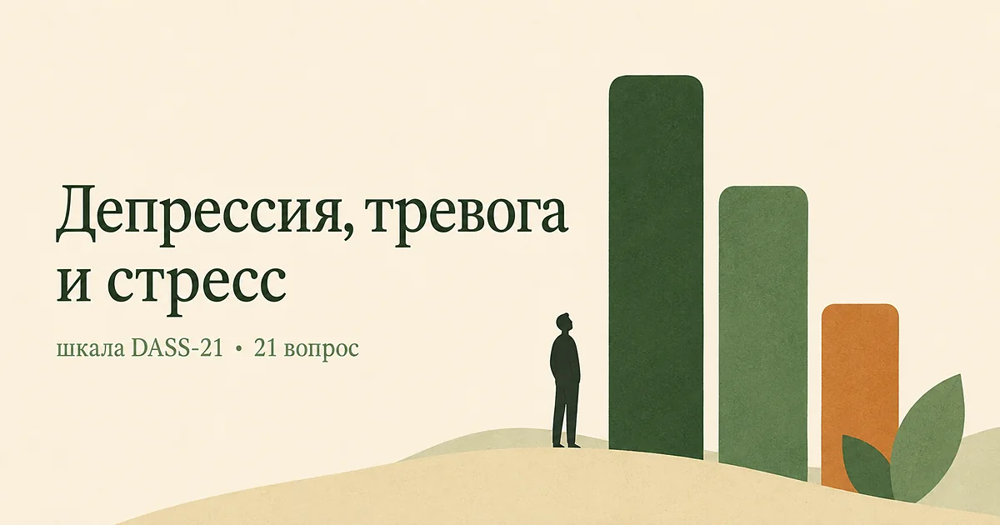

Главная → Тесты → Депрессия, тревога или стресс
Что со мной: депрессия, тревога или стресс? (шкала DASS-21)
Обновлено: 10.08.2026 · 4 минуты на прохождение
Если плохо, но непонятно, что именно — подавленность, тревога или перегрузка, — этот опросник разделяет три состояния и даёт три отдельных результата. Внешне они похожи: и при депрессии, и при тревоге, и при сильном стрессе одинаково не спится, не хочется и всё раздражает. А делать при них нужно разное. Большинство коротких шкал меряет что-то одно и такой развилки не показывает. Результат — три балла от 0 до 42. Бесплатно, без регистрации, ответы остаются в браузере. Это скрининг, а не диагноз.

Что показывает DASS-21
Шкалу разработали Питер и Сидни Ловибонд в Университете Нового Южного Уэльса. Задача была нетипичная для опросников: не измерить «уровень плохого самочувствия», а разделить состояния, которые в анкетах постоянно смешиваются. Полная версия содержит 42 пункта, DASS-21 — вдвое короче и используется гораздо чаще.
Каждая шкала спрашивает про своё:
- Депрессия — про исчезновение: смысла, интереса, способности радоваться, ощущения собственной ценности;
- Тревога — про телесное возбуждение и страх: сердцебиение, дрожь, сухость во рту, близость паники;
- Стресс — про перенапряжение: раздражительность, неспособность расслабиться, бурные реакции, нетерпимость к помехам.
Важная особенность: общего балла у DASS-21 нет и быть не должно. Смысл шкалы именно в том, чтобы увидеть профиль — например, высокий стресс при нормальной депрессии — и не лечить одно вместо другого.
Расшифровка результата
Баллы каждой шкалы умножаются на два: так короткая версия приводится к нормам исходного DASS-42. Мы делаем это за вас — в результате уже итоговые числа.
| Уровень | Депрессия | Тревога | Стресс |
|---|---|---|---|
| Норма | 0–9 | 0–7 | 0–14 |
| Лёгкий | 10–13 | 8–9 | 15–18 |
| Умеренный | 14–20 | 10–14 | 19–25 |
| Тяжёлый | 21–27 | 15–19 | 26–33 |
| Крайне тяжёлый | 28–42 | 20–42 | 34–42 |
Обратите внимание, насколько разные пороги у шкал: 15 баллов — это тяжёлая тревога, но всего лишь лёгкий стресс. Сравнивать три числа между собой напрямую нельзя, каждое читается по своей строке таблицы.
Чем тревога отличается от стресса
Это различение — главное, ради чего стоит проходить DASS-21, и его почти нигде не объясняют. В обиходе «стресс» и «тревога» — синонимы. В шкале это разные вещи.
Тревога здесь — про острую физиологию страха: сердце колотится, руки дрожат, во рту сухо, кажется, что вот-вот случится паника. Организм реагирует так, будто опасность уже здесь, — даже когда рассудком вы понимаете, что её нет.
Стресс — про хроническое перенапряжение: невозможность расслабиться, вспышки из-за мелочей, ощущение, что вы тратите слишком много нервных сил, злость на любую помеху. Тело не в панике, оно в постоянной перегрузке.
Практическая разница большая. При высокой тревоге работают техники, снижающие возбуждение прямо сейчас, — от замедленного выдоха до постепенного возвращения в ситуации, которых вы избегаете. При высоком стрессе дыхание помогает мало: там вопрос в нагрузке, границах и восстановлении, и решается он не упражнениями, а изменением условий. Подробнее — в статье о стрессе на работе.
Что делать с результатом
Если высокая шкала депрессии
Умеренный уровень и выше — повод показаться специалисту, а не «взять себя в руки». На этой шкале ядро — потеря интереса и ощущение бессмысленности, и оно плохо поддаётся волевым усилиям. Для более прицельной проверки можно пройти тест на депрессию по шкале PHQ-9: он ближе к диагностическим критериям и его язык понятен врачу.
Если высокая шкала тревоги
Начните с исключения телесных причин: щитовидная железа, аритмия, анемия, избыток кофеина и отмена алкоголя дают ровно ту же картину. Если соматика исключена, при тревожных расстройствах первой линией считается КПТ. Что можно делать самостоятельно — в статье о том, как справиться с тревогой; для проверки именно тревожной симптоматики есть тест GAD-7.
Если высокая шкала стресса
Высокий стресс при нормальных депрессии и тревоге — самый частый профиль у работающих взрослых, и он же самый обратимый. Здесь помогает не «расслабляться эффективнее», а разбирать нагрузку: что можно снять, где проходит граница, сколько времени в неделе принадлежит восстановлению. Динамику удобно отслеживать шкалой PSS-10.
Насколько тесту можно доверять
DASS-21 — валидированный инструмент с хорошими психометрическими характеристиками; он переведён на десятки языков и широко используется в исследованиях. Его сильная сторона — как раз разделение шкал: депрессивная и тревожная симптоматика в нём смешиваются меньше, чем в большинстве коротких опросников.
Ограничения тоже известны. Шкала спрашивает только про последнюю неделю, поэтому смещается после аврала, болезни или ссоры. Она измеряет выраженность симптомов, а не их причину, и не отличает депрессивный эпизод в рамках биполярного расстройства — а там лечение другое. Наконец, DASS создавался как исследовательский инструмент: он не заменяет клиническую беседу и не ставит диагноз.
Когда идти к врачу, не глядя на баллы
- появляются мысли, что лучше было бы не жить, или желание причинить себе вред;
- состояние держится больше двух недель без перерывов;
- вы перестали справляться с работой, учёбой или бытом;
- тревога переходит в приступы с сердцебиением и страхом смерти — это панические атаки, и они хорошо лечатся;
- рушится сон: не спится неделями или сон не восстанавливает;
- вы начали регулярно снимать состояние алкоголем.
Первый пункт — повод обратиться срочно.
Если по какой-то из шкал результат оказался высоким и хочется разобраться, что за этим стоит, — расскажите, что происходит. Анонимно и без регистрации.
Попробовать бесплатноЧастые вопросы
Что показывает тест DASS-21?
DASS-21 измеряет три состояния отдельно: депрессию, тревогу и стресс. Каждая шкала даёт свой балл от 0 до 42 со своими границами диапазонов. Общей суммы у теста нет — его смысл именно в том, чтобы увидеть, что из трёх выражено сильнее, потому что помощь при них разная.
Чем тревога отличается от стресса в этой шкале?
Шкала тревоги измеряет острую физиологию страха: сердцебиение, дрожь, сухость во рту, ощущение близкой паники. Шкала стресса — хроническое перенапряжение: невозможность расслабиться, раздражительность, бурные реакции на мелочи. При тревоге работают техники снижения возбуждения, при стрессе — пересмотр нагрузки и восстановление.
Почему баллы умножаются на два?
DASS-21 — сокращённая вдвое версия исходного опросника из 42 пунктов, а нормы диапазонов считались для полной версии. Умножение на два приводит короткую версию к тем же границам. На нашей странице это делается автоматически: в результате вы видите уже итоговые числа.
Тест DASS-21 бесплатный и анонимный?
Да. Регистрация не нужна, тест бесплатный, ответы обрабатываются прямо в браузере и никуда не отправляются — мы их не получаем и не храним. Результат виден только вам и исчезает после закрытия страницы.
Материал подготовлен командой AI Therapist. Мы приводим DASS-21 в общепринятом виде, с умножением подшкал на два и стандартными границами диапазонов. Опросник распространяется авторами свободно. Страница носит просветительский характер, не является диагностическим заключением и не заменяет консультацию специалиста.
Источники: Psychology Foundation of Australia — Depression Anxiety Stress Scales (DASS), официальная страница шкалы, Lovibond P. F., Lovibond S. H. «The structure of negative emotional states», Behaviour Research and Therapy, 1995, NHS — Generalised anxiety disorder in adults.
Кто отвечает за содержание сайта и по каким правилам мы готовим материалы — на странице о проекте.